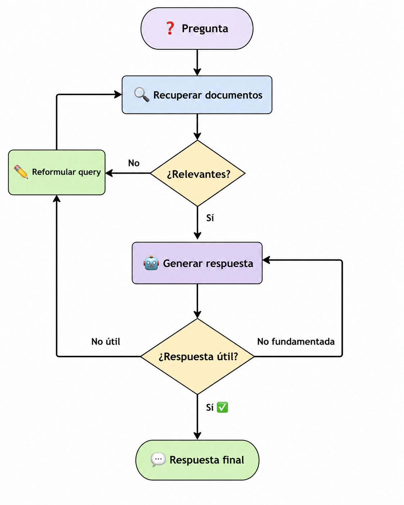
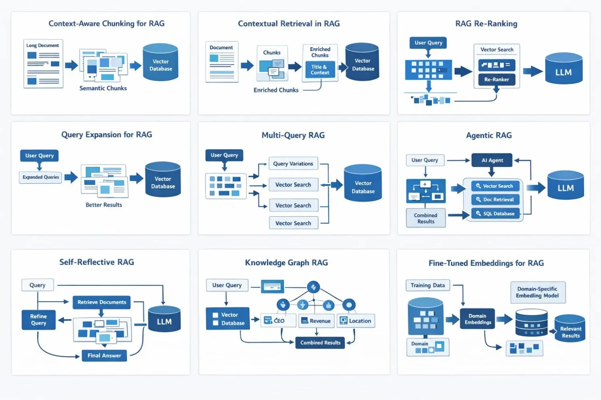

Retrieval-Augmented Generation (RAG)
Unidad de Gobierno de Datos
Abril 2026
Outline
01
El problema
Limitaciones de los LLMs y por qué necesitamos algo más
02
La solución RAG
Qué es, cómo funciona y qué lo hace diferente
03
Arquitectura y componentes
Los 6 bloques que forman un sistema RAG
04
Implementación
Pipeline completo con LangChain y OpenRouter
05
Más allá de lo básico
Estrategias avanzadas, evaluación con RAGAs
06
Casos de uso y límites
Cuándo usar RAG, cuándo no, y próximos pasos
01 · El problema: ¿qué no pueden hacer los LLMs?
Los modelos de lenguaje son poderosos, pero tienen limitaciones estructurales:
❌ Conocimiento estático
Su saber se congela en la fecha de corte del entrenamiento. Nada de lo que ocurrió después existe para ellos.
❌ Sin acceso a documentos privados
No conocen los manuales, reportes ni bases de datos de tu organización.
❌ Alucinaciones
Cuando no saben, inventan con total confianza. No citan fuentes, no admiten ignorancia.
Preguntas que los LLMs no pueden responder bien
“¿Cuál es el código CIUO-08-CL para un pirquinero?”
“¿Cómo ha evolucionado la tasa de desempleo según la última ENE en Chile?”
“¿Cuál es la población de Curanilahue según el último censo?”
Note
Estas preguntas requieren documentos específicos que el LLM nunca vio durante su entrenamiento.
02 · La solución: qué es RAG
RAG (Retrieval-Augmented Generation) = buscar primero, generar después.
Antes de responder, el sistema recupera documentos relevantes y los entrega al LLM como contexto.

03a · Arquitectura RAG: el flujo completo

03b · Los 6 componentes principales
| Componente | Qué hace | Ejemplo típico |
|---|---|---|
| Document Loader | Carga documentos de diversas fuentes | PyPDFLoader, WebBaseLoader |
| Text Splitter | Divide documentos en fragmentos (chunks) | 500 tokens, solapamiento 50 |
| Embedding Model | Convierte texto en vectores numéricos | all-MiniLM-L6-v2, multilingual-e5 |
| Vector Store | Almacena y busca vectores eficientemente | ChromaDB, FAISS, Pinecone |
| Retriever | Recupera chunks relevantes para una pregunta | Top-3 por similitud coseno |
| LLM | Genera la respuesta final con el contexto | GPT-4 (OpenAI), Claude (Anthropic), Gemini (Google), Llama 3 (Meta) |
Tip
Para empezar: PyPDFLoader + RecursiveCharacterTextSplitter + HuggingFaceEmbeddings + ChromaDB es la combinación más portable y sin costos.
04a · Pipeline RAG completo con LangChain
from langchain_community.document_loaders import PyPDFLoader
from langchain_text_splitters import RecursiveCharacterTextSplitter
from langchain_community.embeddings import HuggingFaceEmbeddings
from langchain_community.vectorstores import Chroma
from langchain_openai import ChatOpenAI
from langchain_core.prompts import PromptTemplate
from langchain_core.runnables import RunnablePassthrough
loader = PyPDFLoader("reporte_anual.pdf")
docs = loader.load()
splitter = RecursiveCharacterTextSplitter(chunk_size=500, chunk_overlap=50)
chunks = splitter.split_documents(docs)
embeddings = HuggingFaceEmbeddings(model_name="all-MiniLM-L6-v2")
vectorstore = Chroma.from_documents(chunks, embeddings)
retriever = vectorstore.as_retriever(search_type = "similarity", k=3)
prompt = PromptTemplate("Eres un asistente experto en análisis de reportes. Responde a la pregunta usando SOLO el siguiente contexto:\n\n{context}\n\nPregunta: {question}\nRespuesta:")
llm = ChatOpenAI(
base_url="https://openrouter.ai/api/v1",
api_key="sk-or-...",
model="meta-llama/llama-3.3-70b-instruct:free"
)
chain = (
{"question": RunnablePassthrough(), "context": retriever}
| prompt
| llm
)
respuesta = chain.invoke("¿Cuáles fueron los principales hallazgos?")- 1
-
Carga el PDF completo — cada página queda como un objeto
Documentcon texto y metadatos - 2
- Divide el texto en fragmentos de 500 caracteres con 50 de solapamiento para no perder contexto entre chunks
- 3
- Convierte cada chunk a vector con un embedding multilingüe y los persiste en ChromaDB (solo se ejecuta una vez)
- 4
- Crea el retriever: ante cada pregunta, busca los 3 chunks más similares semánticamente
- 5
- Define el prompt que instruye al LLM a responder solo con el contexto recuperado
- 6
- Conecta al LLM gratuito via OpenRouter con una API compatible con OpenAI
- 7
-
Encadena retriever + prompt + LLM usando la sintaxis LCEL (
|): cada componente recibe el output del anterior - 8
- Invoca la cadena completa — el retriever busca contexto, el prompt lo formatea y el LLM genera la respuesta
04b · LangChain: el framework para construir con LLMs
LangChain es una librería Python que provee bloques estándar para cada componente de un pipeline LLM y una sintaxis simple (
|) para encadenarlos.
Ecosistema de paquetes
| Paquete | Qué provee |
|---|---|
langchain-core |
Prompts, LCEL, interfaces base |
langchain-community |
Loaders, embeddings, vector stores |
langchain-openai |
LLMs compatibles con OpenAI |
langchain-huggingface |
Embeddings y modelos de HuggingFace |
langchain-chroma |
Integración con ChromaDB |
langchain |
Chains y agentes de alto nivel |
Note
Cada paquete tiene su propio ciclo de vida — si ChromaDB cambia su API, solo se actualiza langchain-chroma sin afectar el resto.
LCEL: encadenar componentes con |
from langchain_core.runnables import RunnablePassthrough
from langchain_core.prompts import PromptTemplate
from langchain_openai import ChatOpenAI
chain = (
{"question": RunnablePassthrough(),
"context": retriever}
| prompt
| llm
)
# Un solo invoke ejecuta toda la cadena:
# retriever busca → prompt se arma → llm responde
chain.invoke("¿Cuál es el código CIUO de un podólogo?")Tip
LangChain se basa en la idea de encadenar operaciones. En esencia, es un pipeline de trabajo donde cada paso depende del resultado del anterior.
04c · LangChain: el problema con LangChain agents
LangChain tiene un loop interno que tú no controlas directamente:
- Los agentes combinan modelos de lenguaje con herramientas para crear sistemas que pueden razonar sobre las tareas, decidir qué herramientas usar y trabajar de forma iterativa para encontrar soluciones.
- Las herramientas son funciones Python normales que el agente puede invocar cuando las necesita.
- El agente se ejecuta hasta que se cumple una condición de parada, es decir, cuando el modelo emite una salida final o se alcanza un límite de iteraciones.
- No puedes pausarlo, inspeccionarlo ni meter una aprobación humana en el medio.
from langchain.agents import create_react_agent, AgentExecutor
from langchain.tools import tool
# Herramienta 1: buscar en documentos
@tool
def buscar(pregunta: str) -> str:
"""Busca información."""
return retriever.invoke(pregunta) # el RAG que ya conocemos
# Herramienta 2: calculadora
@tool
def calcular(operacion: str) -> str:
"""Ejecuta una operación matemática."""
return str(eval(operacion))
# El agente tiene acceso a ambas herramientas
tools = [buscar, calcular]
agente = create_react_agent(llm, tools, prompt)
executor = AgentExecutor(agent=agente, tools=tools)
executor.invoke({"input": "¿Cuáles fueron los ingresos anuales?"})Note
El LLM no ejecuta las herramientas — solo decide cuándo llamarlas y con qué argumentos.
04d · LangGraph: cuando el pipeline necesita tomar decisiones
LangGraph extiende LangChain para construir pipelines que no son lineales — donde el flujo puede ramificarse, repetirse o decidir qué hacer según el resultado de cada paso.
Lo que agrega LangGraph
- Un RAG básico es lineal: pregunta → retriever → LLM → respuesta.
- LangGraph permite construir flujos donde el sistema puede, por ejemplo, evaluar si la respuesta fue suficiente y volver a buscar si no lo fue.
- LangGraph te obliga a definir ese loop como un grafo explícito.
- Defines tú mismo cada nodo y cada transición — el flujo deja de ser una caja negra.
| Capacidad | LangChain | LangGraph |
|---|---|---|
| Agente simple | ✅ | innecesario |
| Pausar y aprobar pasos | ❌ | ✅ |
| Flujos condicionales | ❌ | ✅ |
| Estado persistente | ❌ | ✅ |
| Debugging paso a paso | difícil | ✅ |

04e · OpenRouter: acceso a múltiples modelos
OpenRouter es una API unificada (compatible con OpenAI) que da acceso a modelos de varios proveedores.
Modelos gratuitos útiles para pruebas
| Modelo | Contexto | Uso ideal |
|---|---|---|
meta-llama/llama-3.3-70b-instruct:free |
66K tokens | RAG general, mejor soporte en español |
google/gemma-4-31b-it:free |
262K tokens | Multilingüe (140+ idiomas), documentos largos |
qwen/qwen3-next-80b-a3b-instruct:free |
262K tokens | Optimizado para RAG y tool use |
openai/gpt-oss-20b:free |
131K tokens | Rápido y liviano, ideal para pruebas |
nvidia/nemotron-3-super-120b-a12b:free |
1M tokens | Contexto máximo, tareas complejas |
Obtén tu API key gratis en openrouter.ai
05a · ⚠️ Por qué falla el retrieval básico
“Buscar los top 5 chunks y rezar no es una estrategia — es un punto de partida.”
1. El chunking rompe el significado Una idea se parte en dos fragmentos. Ninguno es suficiente por sí solo para responder la pregunta.
2. Similitud matemática ≠ relevancia real Un chunk puede estar “cerca” de la consulta en el espacio vectorial y aun así no contener la respuesta.
3. Los usuarios no hacen preguntas perfectas Una consulta corta necesita ser expandida antes de que el retriever tenga alguna chance de encontrar el material correcto.
4. Algunas respuestas necesitan más contexto del que un chunk puede dar Un párrafo solo puede no ser suficiente — a veces el modelo necesita la sección completa o el documento entero.
5. No todas las preguntas deberían usar el mismo retrieval
| Tipo de pregunta | Retrieval ideal |
|---|---|
| Conceptual | Búsqueda semántica |
| Término exacto / código | BM25 / keyword |
| Datos estructurados | SQL / filtro |
| Entidades relacionadas | Knowledge graph |
05b · Estrategias avanzadas de retrieval
| Estrategia | Descripción | Cuándo usar |
|---|---|---|
| MMR | Evita chunks redundantes | Docs repetitivos |
| Hybrid | BM25 + vectores | Términos exactos |
| Multi-query | Variantes de la pregunta | Preguntas ambiguas |
| Compresión | Extrae parte relevante | Chunks grandes |
| Re-ranking | Segundo modelo de orden | Alta precisión |
retriever = vectorstore.as_retriever(
search_type="mmr",
search_kwargs={"k": 5, "fetch_k": 20, "lambda_mult": 0.7}
)
bm25_retriever = BM25Retriever.from_documents(
documents=docs_split,
k=10)
hybrid_retriever = EnsembleRetriever(
retrievers=[
bm25_retriever, # Sparse (keywords)
retriever, # Dense semántico
],
weights=[0.5, 0.5])05c · El ecosistema RAG avanzado
El RAG básico es el punto de partida. Estas son las direcciones en las que puedes profundizar:

05d · Evaluación de un sistema RAG
Un buen RAG necesita métricas en dos dimensiones:
Retrieval
Precision@K: fracción de chunks útiles en top-K
- (Nº de documentos relevantes en el top K) / K
Recall@K: ¿está el chunk relevante en los top-K?
- (Nº de documentos relevantes en el top K) / (Total de documentos relevantes en el corpus)
MRR: posición promedio del primer resultado correcto
Generación
- Faithfulness: ¿la respuesta está fundamentada en el contexto?
- Answer Relevancy: ¿responde la pregunta?
- Context Utilization: ¿usa bien el contexto?
Framework: RAGAs
06a · Casos de uso reales
💬 RAG como chatbot
Un asistente conversacional que responde preguntas sobre la CIUO-08-CL consultando el manual oficial, con citas de página.
¿Qué puede hacer?
- Resolver dudas sobre definiciones y criterios de clasificación
- Comparar grupos ocupacionales similares
- Citar la página exacta del manual como fuente
Estrategia
- Vectorless RAG (PageIndex)
Stack
- PageIndex + LangChain + Gradio + OpenRouter
🏷️ RAG como clasificador
Un pipeline que recibe una glosa ocupacional y devuelve su código CIUO-08-CL y CAENES, expuesto como API REST para integrarse con otros sistemas.
¿Qué puede hacer?
- Clasificar glosas en diferentes niveles de desagregación
- Procesar miles de registros vía API
- Integrarse con pipelines de producción existentes
Estrategia
- RAG agentico + re-ranking + retriever híbrido
Stack
- LangChain + FastAPI + ChromaDB + OpenRouter
06b · Limitaciones y desafíos
⚙️ Limitaciones técnicas
- Respuestas distribuidas — cuando la respuesta requiere sintetizar información de múltiples chunks o secciones, el retriever recupera fragmentos pero ninguno la contiene completa
- Chunking imperfecto — los fragmentos pueden romper tablas, mezclar secciones y perder contexto entre uno y otro
- Lost in the middle — el LLM tiende a ignorar los chunks del centro del contexto, aprovechando mejor el inicio y el final
- Sensibilidad a la formulación — la misma pregunta escrita distinto puede recuperar chunks completamente diferentes
🏗️ Desafíos prácticos
- Documentos difíciles — PDFs escaneados, tablas, imágenes y columnas se convierten mal a texto plano
- El LLM puede ignorar el contexto — si el modelo no encuentra la respuesta en los chunks entregados, puede responder desde su memoria interna en vez de admitir que no sabe
- Latencia doble — retrieval + generación en secuencia hace el sistema más lento que un LLM directo
- Mantenimiento del índice — cuando los documentos cambian hay que re-indexar; sin un pipeline de actualización el vectorstore queda desactualizado
Regla de oro: El 80% del trabajo en RAG no es el LLM, es limpiar, estructurar y fragmentar bien los documentos.
06c · Recursos para seguir aprendiendo
📚 Documentación oficial
- LangChain — framework principal
- LangGraph — agentes y flujos controlados
- OpenRouter — API unificada de modelos gratuitos
- ChromaDB — vector store local
- RAGAs — evaluación automatizada de pipelines RAG
📄 Papers fundamentales
- Lewis et al. (2020) — Retrieval-Augmented Generation for Knowledge-Intensive NLP Tasks — el paper que inventó RAG
- Es et al. (2023) — RAGAS: Automated Evaluation of RAG Pipelines — métricas estándar de evaluación
- Anthropic (2024) — Contextual Retrieval — cómo enriquecer chunks antes de indexar
🎓 Para aprender haciendo
- LangChain Academy — cursos oficiales gratuitos, incluye RAG y LangGraph
- DeepLearning.AI — LangChain courses — cursos cortos gratuitos de RAG y LLMs, en inglés